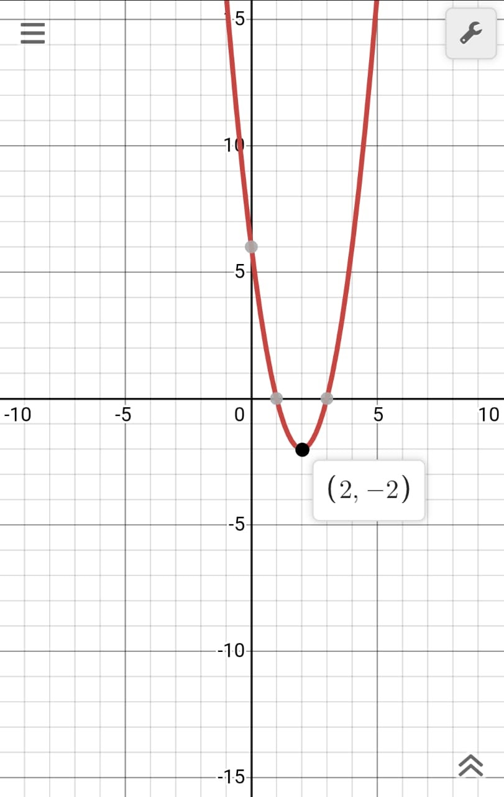

Etudier le sens de variation d'une fonction f définie, c'est préciser les intervalles sur lesquels elle est croissante, les intervalles sur lesquels elle est décroissante et les intervalles sur lesquels elle est constante.
Définition: Soit \(f\) une fonction numérique, et soit un intervalle \(I\) inclus dans \(D_{f}\). On dit que \(f\) est croissante sur \(I\), pour exprimer que deux réels quelconques \(x\) et \(x'\) de \(I\) sont rangés dans le même ordre que leurs images: si \(x ≤ x'\), alors \(f(x) ≤ f(x')\). On dit que \(f\) est décroissante sur \(I\), pour exprimer que deux réels quelconques \(x\) et \(x'\) de \(I\) sont arrangés dans l’ordre inverse de celui de leurs images: si \(x ≤ x'\), alors \(f(x) ≥ f(x')\).
Explication: Une fonction \(f\) est dite décroissante sur une intervalle \(I\), \(f(x) > f(x')\) où \(x < x'\) et \([x ; x'] ε I\). Une fonction \(f\) est croissante sur une intervalle \(I\), si \(f(x) < f(x')\) où \(x < x'\) et \([x ; x'] ε I\). Une fonction \(f\) est constant si \(f(x) = f(x')\) où \(x < x'\) et \([x; x'] ε I\).
Taux d’accroissement ou taux de variation: Généralement si la fonction est monotone sur \(I\) on utilise le rapport où \(x_{0} < x_{1}\) et \([x_{0}; x_{1}] ε I\):
si \((f(x_{1}) - f(x_{0})\over(x_{1} - x_{0}) > 0\) alors \(f(x)\) est croissante. si \((f(x_{1}) - f(x_{0})\over(x_{1} - x_{0}) < 0\) alors \(f(x)\) est décroissante.
Diagrames:

\(f(x) = 2x^2 -8x + 6\) La fonction \(f\) est décroissante sur \(]-∞; 2]\) et croissante sur \([2; ∞[\).
Exemples :
\(f(x) = 3x^2 - 5x - 2\) Sens de variation: D’abord, il faut trouver l'extremum de cette fonction. On admet que l’abscisse \(x\) de l’extremum d’une fonction du deuxième degré est \(-\)\(b\over 2a\) \(=\) \(5\over6\). On trouve le sens de variation d’une fonction en trouvant les signes de la formule \(f(x_{1}) - f(x_{0})\over x_{1} - x_{0}\) dans les deux intervalles \(]-∞;\) \(5\over 6\)\(]\) et \([\)\(5\over6\)\(; ∞]\). Dans les deux intervalles \(x_{0} < x_{1}\). Donc, calculons la formule: \((f(x_{1}) - f(x_{0})\over(x_{1} - x_{0}))\) \(=\) \(3x_{1}^2 - 5x_{1} - 2 - 3x_{0}^2 + 5x_{0} + 2\over x_{1} - x_{0}\) \(=\) \(3(x_{1})^2 - 5x_{1} - 3(x_{0})^2 + 5x_{0}\over x_{1} - x_{0}\) \(=\) \(3((x_{1})^2 - (x_{0})^2) + 5(x_{0} - x_{1})\over x_{1} - x_{0}\) \(=\) \(3(x_{1} - x_{0})(x_{1} + x_{0}) + 5(x_{0} - x_{1})\over x_{1} - x_{0}\) \(=\) \(3(x_{1} + x_{0}) - 5\). Dans l’intervalle \(]-∞-;\)\(5\over 6\)\(]\), \(5\over 6\) \(> x_{1} > x_{0}\) Donc, \(x_{1} + x_{0} <\) \(2 \times\)\(5\over6\) \(x_{1} + x_{0} <\)\(5\over 3\) \(3(x_{1} + x_{0}) < 5\) \(3(x_{1} + x_{0}) - 5 < 0\) Donc, le taux est négatif sur \(]-∞;\) \(5\over6\)\(]\). Dans l’intervalle \(]\)\(5\over6\)\(; ∞]\), \(5\over6\)\(< x_{0} < x_{1}\) Donc, \(x_{1} + x_{0} > 2\times\)\(5\over6\) \(x_{1} + x_{0} >\)\(5\over3\) \(3(x_{1} + x_{0}) > 5\) \(3(x_{1} + x_{0})- 5 > 0\) Donc, le taux est positif sur \(]\)\(5\over6\)\(; ∞]\). \(f\) est décroissante sur \(]-∞;\) \(5\over6\)\(]\) et croissante sur \(]\)\(5\over6\)\(; ∞]\).
\(f(x) = 10x^2 + 20\) Sens de variation: D’abord, il faut trouver l'extremum de cette fonction. On admet que l’abscisse \(x\) de l’extremum d’une fonction du deuxième degré est \(-\)\(b\over2a\) \(=\)\(0\over20\)\(= 0\) On trouve le sens de variation d’une fonction en trouvant les signes du taux de variation \(f(x_{1}) - f(x_{0})\over x_{1} - x_{0}\) dans les deux intervalles \(]-∞; 0]\) et \(]0; ∞]\). Donc, calculons le taux: \(f(x_{1}) - f(x_{0})\over x_{1} - x_{0}\) \(=\) \(10x_{1}^2 + 20 - 10x_{0}^2 - 20\over x_{1} - x_{0}\) \(=\) \(10x_{1}^2 - 10x_{0}^2\over x_{1} - x_{0}\) \(=\) \(10(x_{1}^2 - x_{0}^2)\over x_{1} - x_{0}\) \(=\) \(10(x_{1} - x_{0})(x_{1} + x_{0})\over x_{1} - x_{0}\) \(=\) \(10(x_{1} + x_{0})\). Dans l’intervalle \(]-∞; 0]\), soit \(x_{0} < x_{1} ≤ 0\) Donc, \(x_{1} + x_{0} < 0\) \(10(x_{1} + x_{0}) < 0\) Donc, le taux est négatif sur \(]∞-;0]\). Dans l’intervalle \(]0; ∞]\), soit \(0 ≤ x_{0} < x_{1}\) Donc, \(x_{1} + x_{0} > 0\) \(10(x_{1} + x_{0}) > 0\) Donc, le taux est positif sur \(]0; ∞]\). Donc \(f\) est décroissante sur \(]-∞; 0]\) et croissante sur \(]0; ∞]\).
\(f(x) = -13x^2 - x + 12\) Sens de variation: D’abord, il faut trouver l'extremum de cette fonction. On admet que l’abscisse \(x\) de l’extremum d’une fonction du deuxième degré est \(-\)\(b\over 2a\)\(=\) \(-1\over 26\) On trouve le sens de variation d’une fonction en trouvant les signes du taux de variation \(f(x_{1}) - f(x_{0})\over x_{1} - x_{0}\) dans les deux intervalles \(]-∞;\) \(-1\over 26\)\(]\) et \(]\)\(-1\over 26\)\(; ∞]\). Donc, calculons le taux: \(f(x_{1}) - f(x_{0})\over x_{1} - x_{0}\) \(=\) \(-13x_{1}^2 - x_{1} + 12 + 13x_{0}^2 + x_{0} - 12\over x_{1} - x_{0}\) \(=\) \(-13x_{1}^2 - x_{1} + 13x_{0}^2 + x_{0}\over x_{1} - x_{0}\) \(=\) \(-13(x_{1}^2 - x_{0}^2) - (x_{1} - x_{0})\over x_{1} - x_{0}\) \(=\) \(-13(x_{1} - x_{0})(x_{1} + x_{0}) - (x_{1} - x_{0})\over x_{1} - x_{0}\) \(=\) \(-13(x_{1} + x_{0}) - 1 = -[13(x_{1} + x_{0}) + 1].\) Dans l’intervalle \(]-∞;\) \(-1\over 26\)\(]\), soit \(x_{0} < x_{1} ≤\) \(-1\over 26\) \(x_{0} <\) \(-1\over 26\) \(x_{1} <\) \(-1\over 26\) \(x_{0} + x_{1} <\) \(-1\over 13\) (ajoutons membre à membre) \(-13x_{0} - 13x_{1} - 1 > 0\) Donc, le taux est positif sur \(]-∞;\) \(1\over-26\)\(]\). Dans l’intervalle \([\)\(-1\over26\)\(; ∞[\), soit \(-1\over26\) \(≤ x_{0} < x_{1}\) \(-1\over26\) \(< x_{0}\) \(-1\over26\)\(< x_{1}\) \(-1\over13\) \(< x_{0} + x_{1}\) (ajoutons membre à membre) \(-13x_{0} - 13x_{1} - 1 < 0\) Donc, le taux est négatif sur \(]-∞;\) \(-1\over26\)\(]\). Donc \(f\) est croissante sur \(]-∞;\) \(-1\over26\)\(]\) et décroissante sur \([\)\(-1\over26\)\(; ∞[\).
\(f(x) = \sqrt{x - 1}\) Sens de variation: Il suffit de considérer \(D_{f}\) de \(f(x)\) Soit \(1 ≤ x_{0} < x_{1}\) \(1 - 1 ≤ x_{0} - 1 < x_{1} - 1\) \(0 ≤ \sqrt{x_{0} - 1} < \sqrt{x_{1} - 1}\) \(f(x_{0}) < f(x_{1})\) \(f\) est croissante sur \(D_{f}\).
\(f(x) = 5\sqrt{x + 5} - 7\) Sens de variation: Il suffit de considérer l’intervalle \(D_{f} = [-5; ∞]\) On trouve le sens de variation d’une fonction en trouvant les signes du taux de variation \(f(x_{1}) - f(x_{0})\over x_{1} - x_{0}\) dans l’intervalle \([-5; ∞]\) et \(x_{1} > x_{0}\). Donc, calculons le taux: \(f(x_{1}) - f(x_{0})\over x_{1} - x_{0}\) \(=\) \(5\sqrt{x_{1} + 5} - 7 - 5\sqrt{x_{0} + 5} + 7\over{x_{1} - x_{0}}\) \(=\) \(5\sqrt{x_{1} + 5} - 5\sqrt{x_{0} + 5}\over x_{1} - x_{0}\) \(=\) \(5(\sqrt{x_{1} + 5} - \sqrt{x_{0} + 5})\over x_{1} - x_{0}\) \(=\) \(5(\sqrt{x_{1} + 5} - \sqrt{x_{0} + 5})(\sqrt{x_{1} + 5} + \sqrt{x_{0} + 5})\over (x_{1} - x_{0})(\sqrt{x_{1} + 5} + \sqrt{x_{0} + 5})\) \(=\) \(5(x_{1} + 5 - x_{0} - 5)\over (x_{1} - x_{0})(\sqrt{x_{1} + 5} + \sqrt{x_{0} + 5})\) \(=\) \(5(x_{1} - x_{0})\over (x_{1} - x_{0})(\sqrt{x_{1} + 5} + \sqrt{x_{0} + 5})\) \(=\) \(5\over{\sqrt{x_{1} + 5} + \sqrt{x_{0} + 5}}\) Sur \(D_{f}\): \(\sqrt{x_{1} + 5} + \sqrt{x_{0} + 5} > 0\) et \(5 > 0\), donc le taux est positif \(f\) est croissante sur \(D_{f}\).
\(f(x) =\) \(8\over9x\) Sens de variation: Il faut considérer l’intervalle de \(]-∞;0[\) et \(]0;∞[\) séparément. Soit \(x_{0} < x_{1} ≤ 0\) On trouve le sens de variation d’une fonction en cherchant les signes du taux de variation \(f(x_{1}) - f(x_{0})\over x_{1} - x_{0}\) dans les deux intervalles. Donc, calculons le taux: \(f(x_{1}) - f(x_{0})\over x_{1} - x_{0}\) \(=\) \(8/9x_{1} - 8/9x_{0}\over x_{1} - x_{0}\) \(=\) \(8(x_{0} - x_{1})\over 9x_{1}x_{0}(x_{1} - x_{0})\) \(=\) \(-8\over 9x_{1}x_{0}\) Dans l’intervalle \(]∞-;0[:\) Pour le dénominateur: \(x_{1} < 0\) et \(x_{0} < 0\) \(0 < x_{1}x_{0}\) \(-8\over 9x_{1}x_{0}\) \(< 0\) \(-8\over 9x_{1}x_{0}\) est négatif sur \(]0;∞[\) Donc, \(f\) est décroissante sur \(]-∞;0[\) et \(]0;∞[\)
\(f(x) =\) \(3x+2\over 3x+5\) La valeur critique est \(-5\over 3\) \(3x+5 ≠ 0\) Sens de variation: Il faut considérer l’intervalle de \(]-∞;\)\(-5\over 3\)[ et ]\(-5\over 3\)\(;∞[\) séparément. La forme canonique de \(f(x)\) est : \(f(x)\) \(3x+2\over 3x+5\) \(=\) \(3x+2 + 3 - 3\over 3x+5\) \(=\) \(3x+5 - 3\over 3x+5\) \(=\) \(3x+5\over 3x+5\) \(-\) \(3\over 3x+5\) \(=\) \(1 -\) \(3\over 3x+5\) On trouve le sens de variation d’une fonction en cherchant les signes du taux de variation \(f(x_{1}) - f(x_{0})\over x_{1} - x_{0}\) dans les deux intervalles. Donc, calculons le taux: \(f(x_{1}) - f(x_{0})\over x_{1} - x_{0}\) \(=\) \(1 - 3/(3x_{1} + 5) -1 +3/(3x_{0} + 5)\over x_{1} - x_{0}\) \(=\) \(3(3x_{1} + 5 -3x_{0} -5)\over (x_{1} - x_{0})(3x_{1} + 5)(3x_{0} + 5)\) \(=\) \(9(x_{1} - x_{0})\over (x_{1} - x_{0})(3x_{1} + 5)(3x_{0} + 5)\) \(=\) \(9\over (3x_{1} + 5)(3x_{0} + 5)\) Dans l’intervalle \(]-∞;-53[:\) \(x_{1} <\) \(-5\over 3\) \(3x_{1} < -5\) \(3x_{1} + 5 < 0\) \(x_{0} <\) \(-5\over 3\) \(3x_{0} < -5\) \(3x_{0} + 5 < 0\) \((3x_{1}+5)(3x_{0}+5)>0\) Donc le taux est supérieur à 0, donc \(f\) est croissante sur \(]\)\(-5\over 3\)\(;∞[\)
\(f(x) =\) \(E(0.5+E(x))\) Si on observe bien, on voit que cette fonction peut être réécrit dans une façon plus simple. On sait que \(E(x)< E(x)+0.5< E(x) + 1\) Donc, \(E(0.5+E(x)) = E(x).\) \(k ∊ Z\) Soit \(k ≤ x_{0} < x_{1} < k+1\) \(E(x_{0}) = E(x_{1})\) \(E(x)\) est constant par l'intervalle. Soit 2 reels \(x_{0}\) et \(x_{1}\) tel que \(k ≤ x_{0} < k+1 et k+1 ≤ x_{1} < k+2\) \(f(x_{0}) = E(x_{0}) = k\) \(f(x_{1}) = E(x_{1}) = k+1\) \(f(x_{0}) < f(x_{1})\) \(f(x)\) est croissante au sens large.
\(f(x) =\) \(|6x+31|\) La valeur critique est \(-3\over 16\) Sur \(]-∞;\)\(-3\over 16\)\(]\) est une fonction affine par morceau ou \(m = -6 < 0.\) Donc \(f\) est decroissante. Sur \([\)\(-3\over 16\)\(; +∞[\) \( m = 6 > 0.\) Donc \(f\) est croissante.